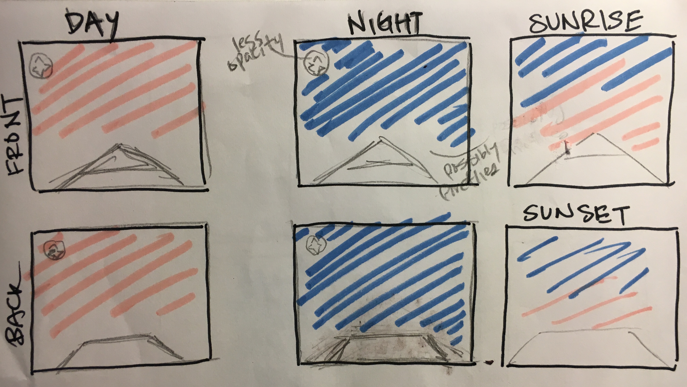

Assignments
Project 1:
jQuery OwlsProject 2: JQuery
JQuery is incorporated into this website's navigation bar and name. The link fades in or out depending on the mouse's location.
Inspired by this
example.Project 3: API Example
API ExampleProject 4: UX Wireframe Rebrand
DottyProject 5: Final Project Proposal
VR Meditation Letter of Intent:
I have always been a critic of virtual reality. Despite its popularity, I was always highly critical that it failed or was incapable of portraying reality. Reality has too many dimensions that it is impossible to structure a similar experience. However with no experience with Virtual Reality, I think it is rather arrogant of me to make such statement. Hence, for the final project I want to create a virtual reality experience. The goal is not to replicate reality rather it is to encompass a mood of peace. For the last couple days, I was unable to sleep. Brainstorming an idea for the final project was very frustrating and stressful. If I was home in New Jersey, to move out of the moment. Despite there being thousands of meditation methods, they all have the same goal for the user to achieve “effortless inner silence [so] deeper states of consciousness can be discovered.” This idea of choiceless awareness and pure being is the fundamental purpose behind all meditation. Therefore, I want to create such feeling solely based on the environment. Meditation using VR already exist but it’s a guided process that personally makes me feel anxious. My hope is that people do not have to take part, rather just be part of the experience. Also because I want this experience to be easily accessible to college students, I want to focus my development on the laptop platform. The experience will still be 360 but instead of looking around, navigating requires using the mouse or arrow keys.
Theme and Subject:
The virtual reality encompasses the user on a boat. The water will be calm, and above the water is a layer of fog making the horizon different to see. Time will be the changing factor in this experience. The color and brightness of the sky corresponds to the current time. The experience also includes an audio track of nature sounds like the undulation of waves and chirping of distance birds.
Scope:
For the construction of the boat, I hope to create it in illustrator or possibly unity. For the nature track, if time permits, I want to record my own audio track near the ocean. The color and brightness of the sky will be based on Weather.com’s API. More research needs to be done on how to add special effects and how to create a 360 platform.
Design:
I want to keep the presentation of my content as simple and as neutral as possible. Besides the navigation on the top left hand corner, the rest of the content is nature.

Research:
Theme
-- I really like the self exploratory aspect of the project
Non-Virtual Meditation Guide
--too much input
VR Meditation Guide
--too complex
Creative Direction & Design Proposal:
Sticking with original proposal!
Two different user stories based on two different personas from target userbase:
Mindful Meditation: (Buddhist tradition)
-awareness of sounds and activities around
-fluidity of bind
-usually sitting
-being in the moment
Spiritual Meditation:
-communication with God to discover truth
-be calm and quiet first before focusing on the problem
-reward
-focus on present moment
"There are three basic aspects worked with in [mindful] meditation technique : body, breath and thoughts. First, we relate with the body. This includes how we set up the environment. Since we use meditation in preparing ourselves to work with others, we use an eyes-open practice. That makes what we have in front of us a factor in our practice."
citation
Comprehensive Content Outline:
Person in wooden boat. The water is reflective of the sky like a mirror. There is mist on the water and horizon is far away and difficult to see. The sky changes in accordance with Los Angeles' time.
Research analysis of technical requirements and technical scope:
VR Platform
Web VR Starter Kit
3D Panorama
Building in WebVR makes VR Easy : gitHub
Weather API
Ocean Simulator
Experimental Code:
VR.floor({ color: 'lightblue' });
VR.box().moveTo(0, 0, 0).setMaterial('weathered-wood');
//find water and take from github
VR.floor().setMaterial('grass', {
repeat: 300
});
//an animated sky
var sky = VR.sky();
VR.animate(function (delta, time) {
var oldAzimuth = sky.azimuth;
//the bigger the division, the slower the time
sky.altitude = time / 30;
if (oldAzimuth !== sky.azimuth) {
console.log(sky.azimuth);
}
});
//place viewer in center
VR.body.moveTo(0, 1.5, 0);